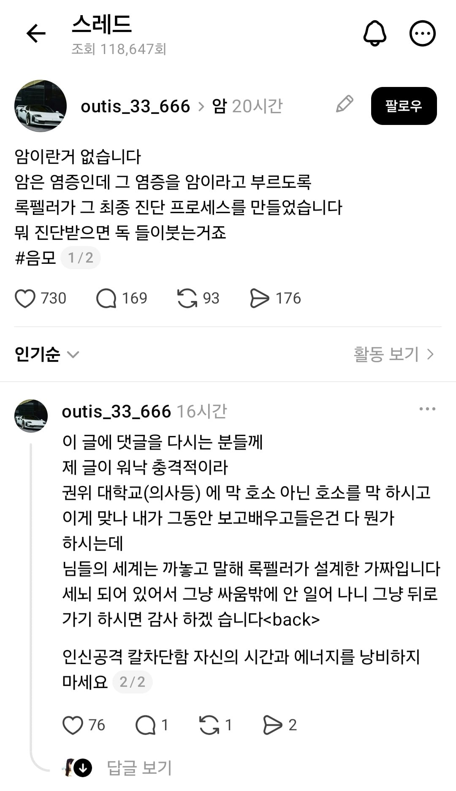

프로필에 옳그떠 있어서 못퍼옴
그종교임

프로필에 옳그떠 있어서 못퍼옴
그종교임
쟤들 약도 사람을 세뇌시키기 위한 프리메이슨, 일루미나티 뭐 그런쪽에서 쓰는 도구라서 먹지말라고 하더라
일상생활 가능한지 궁금하더라 ㅋㅋㅋ
어릴때 해열제를 못먹어서 뇌가 익었나?
염증이라기보다는 종양아닌가
ㅋㅋㅋㅋㅋㅋ 제발 염증 생겨서 비참하게 뒤져라 뭔 병신 같은...
빌게이츠가 아니라 록펠러를 차용했다는 점에서 참신함 1점 드립니다
종양과 염증 차이도 모를거 같은데
ㅅㅂ 떠들기 좋아지니 병신새끼가 기어나오네,
기본적 상식은 다 허구이며 가짜라며 그 틀을 부셔야 한다
라는걸로 시작하는게 사짜들의 시작이지
사이비도 마찬가지고
그거에 현혹되는 사람들이 있으니까 계속 하는거고
그래도 쟤가 옳은 말 하나는 했네
"자신의 시간과 에너지를 낭비하지 마세요"
666이다
뒤로가기 (back)
오고고곡
뒤가 약하구나
대환장파티네 ㅋㅋㅋ 미정갤도 하겟네 ㅋㅋㅋ
옛날에는 저런 병신들이 티비에나 나올만큼 희귀한줄 알았는데
sns의 발달로 전세계의 알고싶지않은 병신들이 이리 많았구나라는걸 알게됨
빨리 빨리 도태돼라
언능 사망하셔서 원하는 신 만나셔요
자기들이 주장하는 것들 진짜로 증명해서 논문 발표하면 과학과 의학의 세계관이 뒤집히고 자기 이름 역사에 남길 수 있을텐데 그런 건 뒤져도 안함
ㄹㅇㅋㅋ 생물학 공부, 연구해서 자기 말이 맞다는 걸 증명하면 되는데 절대 안함ㅋㅋㅋ
쟤는 국사를 안 배웠나? 염증도 현대의학이 발달해서 그나마 만만한 거지 씹ㅋㅋㅋㅋ
이제 저사람 암걸리면 병원 바닥에 울고 뒹굴면서 신좆까 의사선생님 살려달라고 함
록펠러가 설계한 가짜라니 ㅉㅉ
이 세계는 빌게이츠가 설계했다
세상이 살기 좋아져서 그런건지 힘들어져서 그런건지 저런 종교쟁이들 점점 늘어나는거같음
비상식적인 사람한테
상식적으로 대하려하면 나만 피해봄
무시하거나
피할 수 없을땐 나도 비상식적으로 해야됨
약을 안먹으면 이렇게되는구나
저런애들은 sns에서 지가 뭐 대단한 권위라도있는척 영향력이라도 있는척만 존나쳐하고 실제로는 집에서 엄마한테 등짝이나 존나쳐맞고있는 동시에 폰보면서 키득대고있는년들이 대부분임
염증은 정상세포
염증이면 개아플텐데...
약 안먹게?
이단새끼일듯 세브란스병원이랑 성심병원에서 기겁하겟내
걍 사람들 열뻗칠만한 글 써서 트래픽 모아다 팔아먹으려는놈 아님?
인터넷이 발달하니 담당일진 사각지대가 생기는듯
대충 암이리는 단어빼고봐도 염증이 짐화해서 개좆되면 암아님? ㅅㅂ
조현병인줄 알았는데 종교였군
저런거도 병인거 같음
헬스카레 그 분 따라가셔야겠네
저런 주장을 떳떳이 할 수 있다는 것에 한 번 놀라고 옹호&동조자들이 졸라 많은거에 두번 놀라고 옴...
갑자기 음모라니 존나 야하네
그 종양이 니 양분을 다 빨아먹고 니 장기를 죽이고 더퍼지면 니 몸을 죽이는데? 냅두던가
걍 어그로팔이아님?
거의 그렇게 단순화할 수는 없지만, “만성 염증은 암과 같은 방향으로 작용한다” 정도로 이해하면 꽤 정확합니다.
염증 ≠ 암
하지만 만성 염증 → 암 발생 위험 증가
암 → 주변 염증 증가도 가능
따라서 일부 암에서는 염증과 암이 서로 증폭하는 관계가 됩니다.
한 줄로 압축하면:
급성 염증 = 정상적인 방어반응 / 만성 염증 = 암이 생기고 자라기 쉬운 환경
특히 간염→간암, 헬리코박터 만성 위염→위암, 만성 장염→대장암처럼 인과관계가 비교적 명확한 사례들이 있습니다.
마지막 진짜 개짜친다 ㅋㅋㅋㅋ 아 몰랑 내 말이 맞아 이거 아님 ㅋㅋㅋㅋㅋ
그래서 그 염증이 생겼는데 약을 먹어야 한다는 생각을 안할건가???